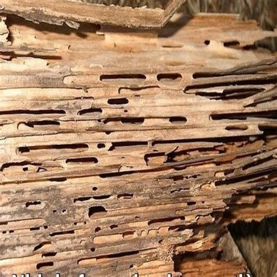
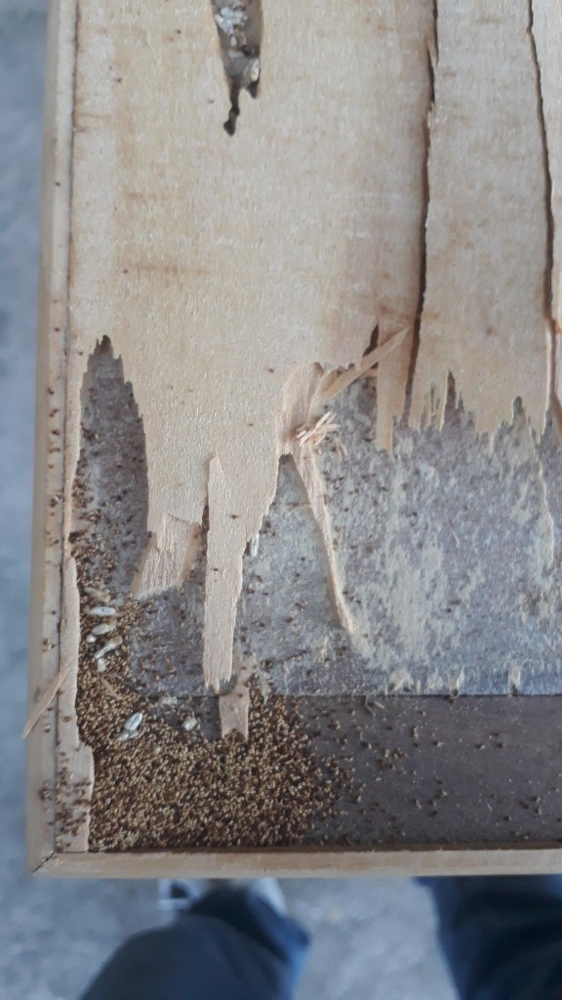
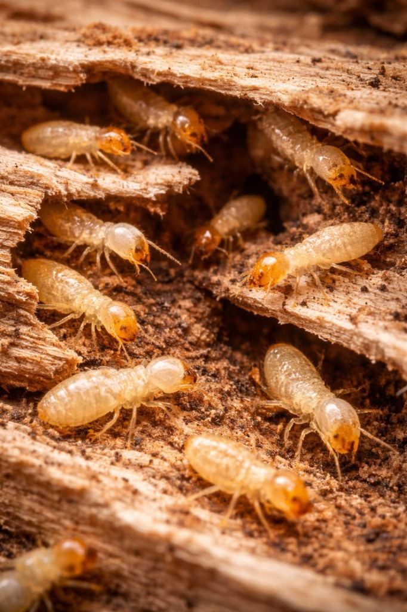
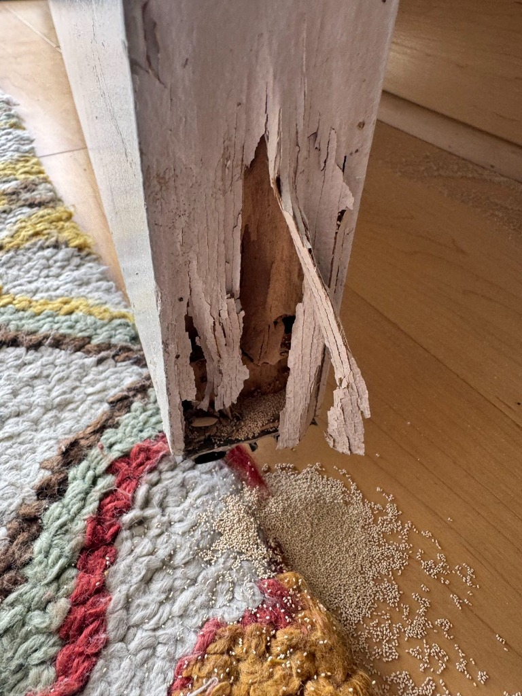
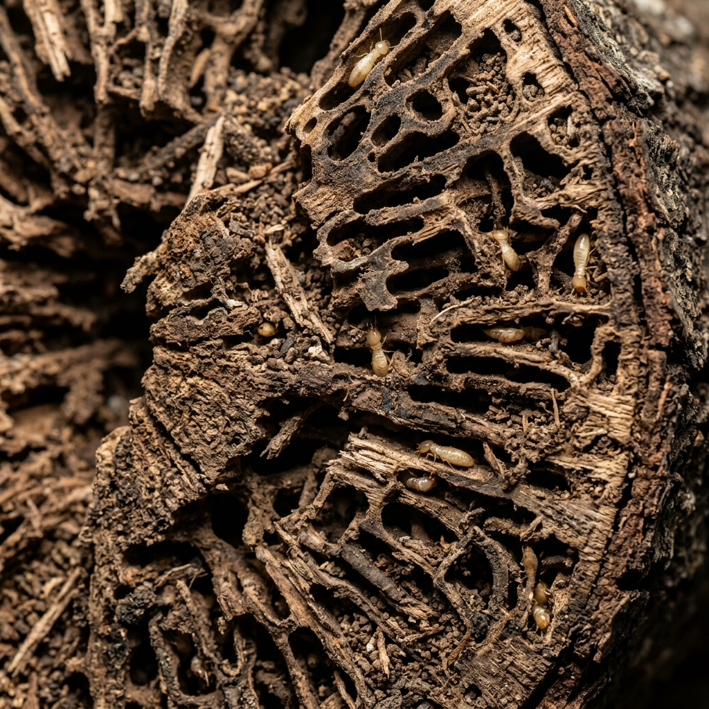
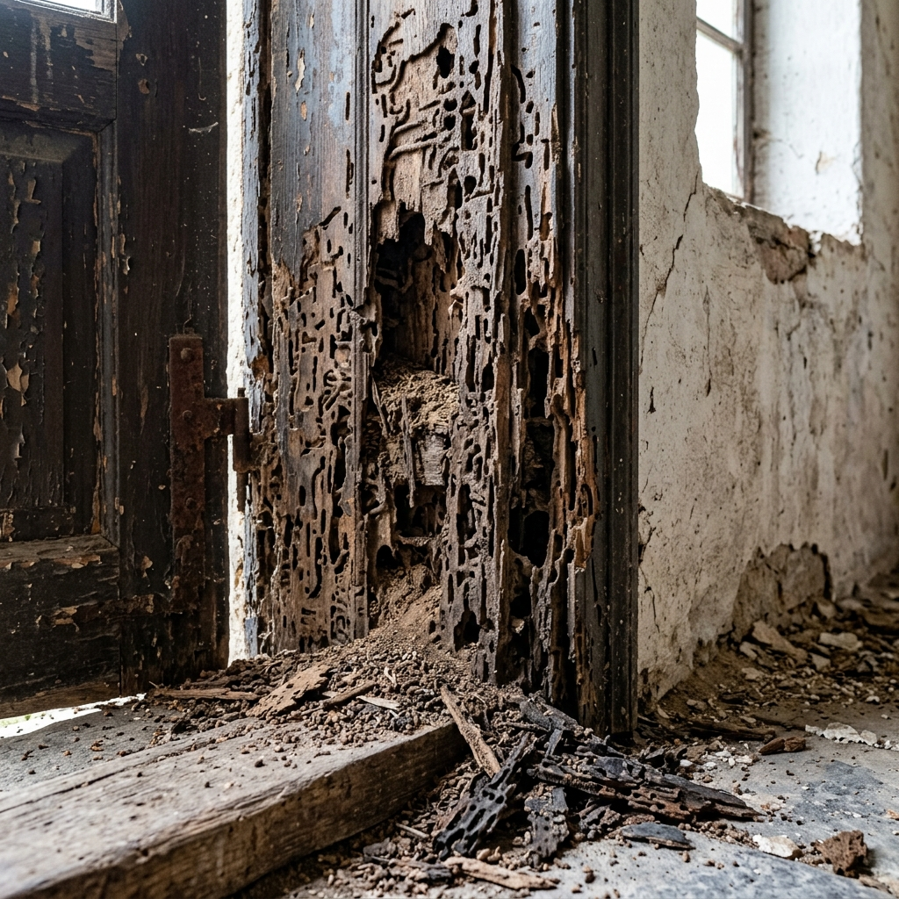

O Cryptotermes brevis se instala dentro da madeira e destrói por dentro, sem avisar. Quando o estrago aparece do lado de fora, geralmente já é tarde. Veja os sinais, os danos reais e como eliminamos a colônia por completo.
O cupim de madeira seca (Cryptotermes brevis) é uma das pragas mais devastadoras para imóveis residenciais e comerciais. Diferente de outros cupins, ele não depende do solo, pode se instalar em qualquer madeira seca, como móveis, portas, janelas, telhados e estruturas internas.
Sua colônia se desenvolve dentro da própria madeira, tornando a infestação quase invisível até que os danos sejam irreversíveis. O sinal mais comum é a presença de pó de madeira fino (fezes) ao redor de pequenos buracos circulares.






Utilizamos inseticidas de última geração aplicados diretamente nas madeiras infectadas, com injeção em galerias e tratamento superficial. O processo elimina 100% da colônia e cria uma barreira protetora duradoura.
Não perca tempo! Cada dia sem tratamento aumenta os danos. Entre em contato agora e receba um orçamento gratuito.